CLAUDE’S PICK


Dragon Hatchling: 뇌에서 영감을 받은 트랜스포머 대체 아키텍처
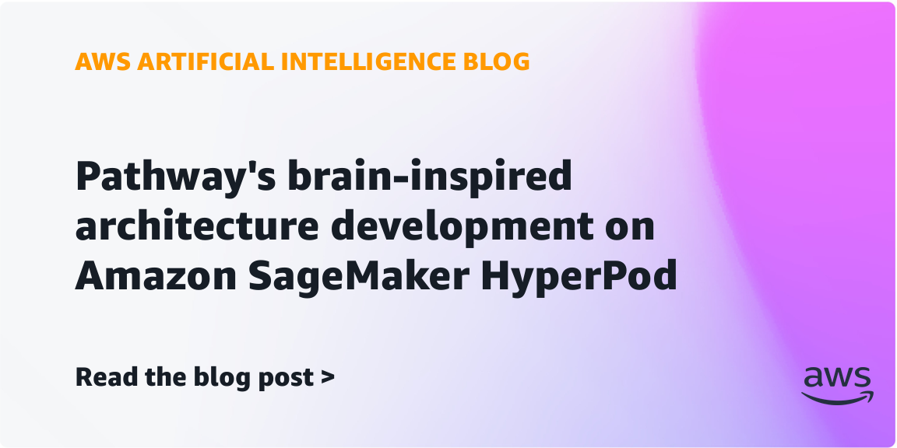
트랜스포머 기반 대형언어모델들은 긴 시간에 걸친 일관된 추론과 지식 보유에 한계를 보인다. Pathway의 Dragon Hatchling은 뇌 구조에서 영감을 받은 신경망 아키텍처로, 텍스트 토큰을 생성하는 대신 잠재 공간에서 추론을 수행하며, 테스트 시간 동안 모델의 내부 메모리를 반복적으로 업데이트하여 중간 추론 과정 없이 문제를 해결한다.
핵심 포인트: 핵심 기여: 트랜스포머 패러다임을 벗어난 생물학적으로 영감받은 확장 자유 신경망 구조로 훈련과 추론 효율성 개선, 고정 컨텍스트 윈도우 제약 없이 장기 추론 능력 실현, 미세조정이나 재훈련 없이 맥락적 메모리 업데이트 가능.
🔗 aws.amazon.com/blogs/machine-learning/pat…
기타 (Others)


Trillion Labs: Self-Speculative Decoding으로 OCR 디코딩 3.85배 가속
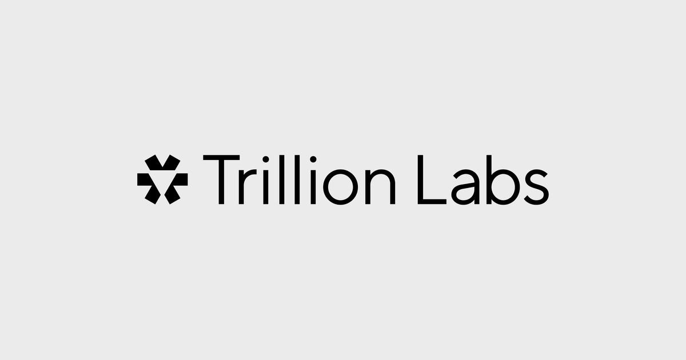
OCR 모델의 느린 추론 속도 문제를 해결하기 위해 트릴리온랩스는 한 모델이 확산 모델로 초안을 생성하고 자기회귀 경로로 검증하는 셀프 스펙큘레이티브 디코딩 기법을 제안한다. GLM-OCR 0.9B 기반 모델에서 품질 손실 없이 포워드당 평균 9.6개 토큰을 커밋하여 디코딩 구간 3.85배, 전체 페이지 처리 1.34배 성능 향상을 달성했다.
핵심 포인트: 핵심 성과: AR 출력과 바이트 단위로 동일한 결과를 유지하면서 디코딩을 3.85배 가속화했으며, 기존 MTP 베이스라인보다도 빠른 성능을 구현했다.
🔗 blog.trillionlabs.co/posts/diffusion-ocr/
블로그 (Blog)
CLIProxyAPI — 여러 AI 구독을 통합 API로 제공하는 로컬 프록시
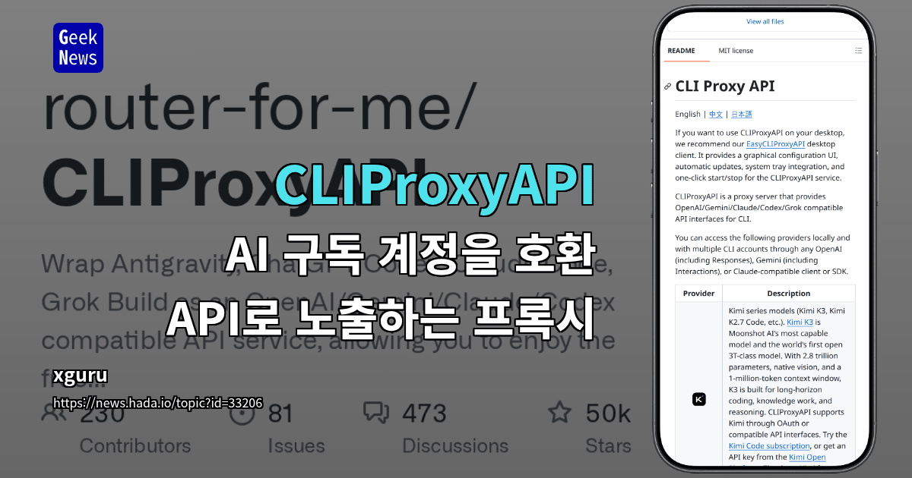
ChatGPT, Claude, Gemini, Grok 등 여러 AI 서비스의 OAuth 계정을 로컬 프록시에 연결하여 OpenAI 호환 API로 통합 제공하는 도구. 별도의 API 키 발급 없이 기존 SDK와 코딩 에이전트에서 구독 계정의 모델을 직접 호출할 수 있으며, 요청을 각 제공자의 형식으로 자동 변환하고 라운드 로빈 방식으로 분산 처리한다. 데스크톱 클라이언트와 Go SDK, 관리 API를 제공하여 다양한 환경에서 유연하게 사용 가능하다.
핵심 포인트: 핵심 기여: 복수의 AI 구독 계정을 단일 OpenAI 호환 인터페이스로 통합하여 API 비용을 제거하고, 스트리밍, 도구 호출, 이미지 입력, WebSocket 등 다양한 기능을 지원하며 모델 별칭을 통한 유연한 서비스 전환을 제공한다.
기타 (Others)
AI & RESEARCH
neuralCAD-Edit: 멀티모달 지시 기반 3D CAD 모델 편집 벤치마크
기존 텍스트 기반 3D 모델 편집과 달리, 전문 CAD 엔지니어들의 실제 작업 영상을 수집하여 음성, 포인팅, 드로잉을 포함한 멀티모달 지시를 통한 CAD 모델 편집 벤치마크를 제시한다. GPT 5.2를 포함한 최고 수준의 파운데이션 모델들을 인간 전문가와 비교 평가한 결과, 자동 지표와 인간 평가 모두에서 큰 성능 격차를 확인했으며 특히 인간 수용도 시험에서 53% 이상 낮은 점수를 기록했다.
핵심 포인트: 핵심 기여: 전문 CAD 설계자 10명으로부터 수집한 첫 번째 멀티모달 3D CAD 편집 벤치마크를 제시하고, 현존 최고의 파운데이션 모델이 인간 전문가 대비 53% 낮은 성능을 보여 향후 3D CAD 편집 기술 개발의 기준점을 마련했다.
논문 (Papers)

Microsoft Foundry: 에이전트 최적화를 위한 컨텍스트 엔지니어링
AI 에이전트의 운영 비용이 컨텍스트 윈도우 크기에 의해 결정되는 문제를 해결하기 위해 Microsoft Foundry는 컨텍스트 엔지니어링 기법을 제시한다. 에이전트가 학습하면서 동적으로 컨텍스트를 최적화하여 불필요한 콘텐츠를 제거하고 관련성 높은 정보만 제공함으로써 매 턴마다 발생하는 비용을 절감하면서 응답 품질을 향상시킨다.
핵심 포인트: 핵심 기여: 컨텍스트 윈도우 최적화로 에이전트의 운영 비용을 체계적으로 감소시키면서 성능을 개선하는 관리 투자 시스템 제시. 불필요한 정보 제거와 관련 도구 선별을 통해 에이전트 실행 턴 수를 감소시키고 정확도를 높인다.
🔗 azure.microsoft.com/en-us/blog/the-econom…
기타 (Others)
Claude — 프롬프트 최적화로 비용 14.6% 절감, 정확도 5.3%p 향상
Claude 모델 사용 시 비용과 성능의 트레이드오프 문제를 해결하기 위해 앤트로픽이 세 가지 최적화 방법을 공개했다. 프롬프트 캐싱 적중률 향상, 레거시 지침 제거, 작업별 추론 강도 조절을 통해 품질 저하 없이 운영 비용을 절감할 수 있다. 고객지원 평가에서 불필요한 지침 문장을 제거했을 때 비용이 14.6% 감소하면서 정확도는 5.3%p 상승했으며, Claude Code의 자동화 스킬로 이 과정을 간소화했다.
핵심 포인트: 핵심 성과: 프롬프트 최적화를 통해 비용 14.6% 절감, 정확도 5.3%p 향상. 캐시 읽기 비용을 토큰당 0.25달러로 낮춰 기존 10달러 대비 40배 비용 절감 가능.
🔗 claude.com/blog/reducing-cost-and-improvi…
기타 (Others)
NoRA: LoRA 한 줄 수정으로 학습 안정성 향상
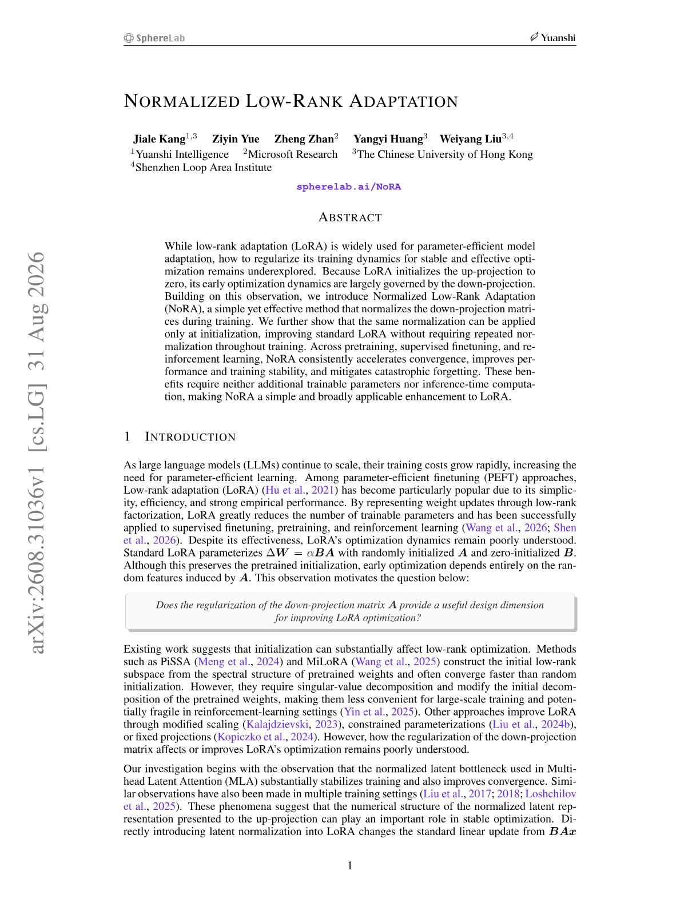
LoRA 파인튜닝 시 초기 학습을 좌우하는 다운 프로젝션 행렬의 불안정성 문제를 해결하는 정규화 기법. 다운 프로젝션에 정규화를 적용하여 추가 파라미터나 연산량 없이 수렴 속도를 높이고 재앙적 망각 현상을 감소시킨다. SFT 및 강화학습 작업에서 코드 한 줄 수정만으로 적용 가능하며 비용 증가가 없다.
핵심 포인트: 핵심 기여: LoRA 코드 한 줄 수정으로 추가 파라미터 없이 학습 안정성과 수렴 속도를 개선하고, 파인튜닝 시 망각 현상을 완화한다. 초기화 단계에만 정규화를 적용하는 저비용 옵션도 제공한다.
🔗 academy.dair.ai/papers/normalized-low-ran…
기타 (Others)
GPT-6 Astra — OpenAI의 최고 성능 AI 모델 출시
OpenAI가 9월 3일 GPT-6 Astra를 공개했다. 이 모델은 Stargate에서 GPU 10만 장 이상으로 훈련된 역대 최대 규모의 결과물이며, 컴퓨터 사용, 브라우징, 소프트웨어 엔지니어링, 사이버보안, 과학, 전문직 업무 등 여섯 영역에서 최고 성능을 달성했다. Greg Brockman은 이 모델이 AGI 도달의 시점이 될 것이라고 언급했으며, 안전 심사에서 최고 위험 등급으로 판정되었음에도 향상된 거부율과 정렬 메커니즘을 통해 출시되었다.
핵심 포인트: 핵심 성과: ARC-AGI-3 벤치마크에서 이전 모델의 7.8%에서 99.9%로 상승했으며, API 가격은 입력 토큰당 50로 책정됨. 제로데이 취약점 발견 및 공격 코드 생성 능력이 Critical 등급으로 평가되었으나, 감시와 정렬 개선을 통해 안전 조건을 충족하고 출시됨.
🔗 openai.com/index/gpt-6-astra/
기타 (Others)
Muse Spark 1.3: 메타의 차세대 코딩 에이전트 모델 공개
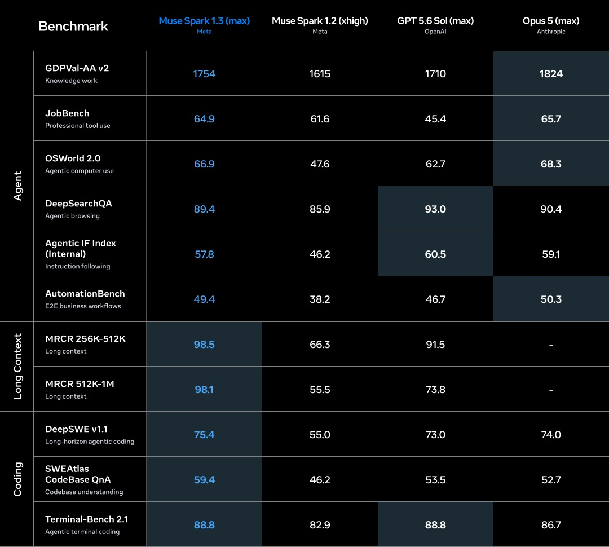
메타가 5개월 사이 네 번째 버전인 Muse Spark 1.3을 공개했다. 이 모델은 에이전트와 코딩 작업 전반에서 성능을 향상시켰으며, 터미널 코딩 에이전트 Muse Code와 Meta Model API에서 사용 가능하다. Muse Spark 1.3 max는 독립 평가 벤치마크에서 GPT-5.6 Sol과 동등한 성능을 보이면서도 작업당 비용은 40% 저렴하고, xhigh 버전은 다른 60 이상 점수 에이전트 중 가장 저렴한 비용으로 경쟁력을 확보했다.
핵심 포인트: 핵심 성과: Muse Code 환경에서 Muse Spark 1.3 max는 68점, xhigh는 64점으로 평가되었으며, xhigh 버전은 작업당 1.72달러로 60점 이상 에이전트 중 가장 저렴한 비용 효율성을 달성했다.
🔗 research.meta.ai/blog/introducing-muse-sp…
기타 (Others)
DEVTOOLS & OPEN SOURCE
Utopia — 시간 개념을 적용한 지식 그래프 RAG 시스템
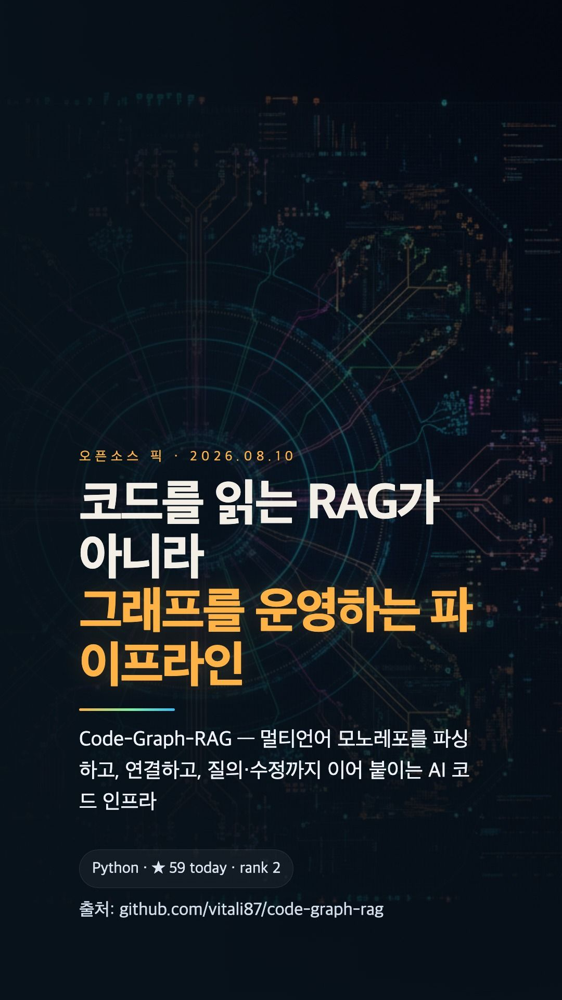
기존 RAG 시스템은 정보 업데이트 시 과거 이력을 덮어씌워 데이터 변경 과정을 추적할 수 없다는 문제가 있다. Utopia는 Bitemporal 개념을 적용한 오픈소스 지식 그래프 시스템으로, 데이터가 수정되어도 언제 어떻게 변경되었는지 모든 이력을 보존한다. 이를 통해 AI 에이전트는 과거 시점의 정확한 맥락을 기반으로 추론할 수 있으며, 규정 준수 감시 추적도 함께 지원된다.
핵심 포인트: 핵심 기여: 엔터프라이즈 환경에서 시간 인식 온톨로지를 기반 계층에 통합하여 지식 그래프와 벡터 저장소의 한계를 극복하고, 오프라인 배포 가능한 신뢰 가능한 의사결정 코어 제공
GitHub
/show-me: PR 설명을 위한 코드 시각화 스킬
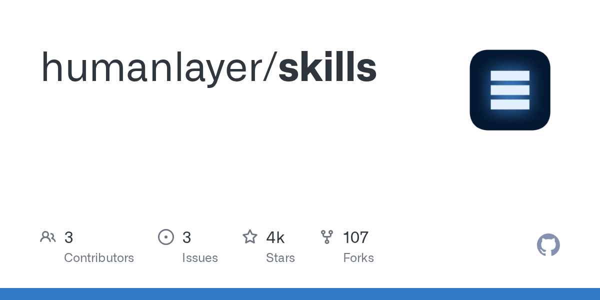
PR 리뷰 시 코드 변경 사항을 명확하게 표현하기 어려운 문제를 해결하는 스킬. HumanLayer의 /show-me는 의사코드, 호출 트리, 컴포넌트 트리, 파일 트리, 머메이드 다이어그램 등 상황에 맞는 최소한의 시각 표현 방식을 정의한 지시문 모음으로, 변경 사항은 diff 형태로 전체가 아닌 변경된 부분만 그리도록 강제한다. 3,297바이트의 간결한 문서로 Claude와 같은 AI 에이전트가 PR 설명을 일관되고 읽기 쉽게 작성하도록 가이드한다.
핵심 포인트: 핵심 성과: 34만 팔로워 개발자 맷 포콕이 PR 설명 작성을 경이롭다고 평가했으며, 명령어 없이 순수 지시문만으로 AI 에이전트의 코드 표현 방식을 표준화하는 데 성공했다. 8월 9일 초판 이후 커뮤니티에서 3주간 검증되어 실제 AI 에이전트의 시각화 생성 능력을 향상시킴을 확인했다.
🔗 github.com/humanlayer/skills/blob/main/pl…
기타 (Others)
Claude Code — 자체 호스팅 환경 공개 베타 출시
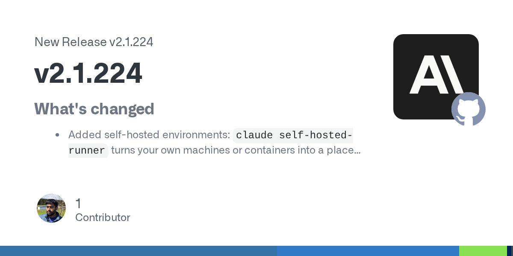
기업들이 민감한 데이터나 내부 시스템에 접근할 때 외부 서버에 의존하는 보안 위험을 해결하기 위해 Anthropic이 Claude Code의 자체 호스팅 환경을 공개 베타로 출시했다. claude self-hosted-runner setup 명령으로 자신의 인프라에 배포하면 코드 실행 세션이 조직의 내부 네트워크 안에서 동작하므로, VPN, 프라이빗 레지스트리, 방화벽 뒤의 데이터베이스 등 모든 내부 리소스에 투명하게 접근할 수 있다. 자체 호스팅 CI 러너와 동일한 개념으로, 개발 워크플로우를 완전히 통제 가능한 런타임으로 이동할 수 있다.
핵심 포인트: 핵심 성과: Team과 Enterprise 플랜에서 자체 호스팅 러너를 통해 코드 실행 위치를 고객망 내부로 완전히 이동시켜 규정 준수 및 데이터 보안 요구사항을 충족하고, 자체 호스팅 CI 러너와 동일한 아키텍처로 기존 DevOps 워크플로우와 통합 가능하다.
🔗 github.com/anthropics/claude-code/release…
기타 (Others)
Anthropic ant CLI — Claude AI 에이전트를 Git으로 관리
Claude Managed Agent의 설정, Skills, Memory Store, 배포 설정을 코드로 작성하여 Git 저장소에서 관리할 수 없던 문제를 해결한다. ant CLI의 ant apply 명령어로 저장소의 설정과 Claude API의 실제 리소스를 자동 동기화하여, 웹 기반 수동 설정 대신 버전 관리와 팀 협업을 가능하게 한다. AI 에이전트가 실제 서비스 개발에 활용되면서 기존 소프트웨어 인프라처럼 관리하는 방식으로 전환된다.
핵심 포인트: 핵심 기여: Git 저장소 기반 에이전트 설정 관리로 버전 제어 및 팀 협업을 실현하고, Infrastructure as Code 패러다임으로 AI 에이전트 배포를 자동화한다.
🔗 threads.com/@choi.openai/post/Dc3cc2hEuRe…
기타 (Others)
GitHub Agentic Workflows — 마크다운으로 레포 자동화를 정의하는 에이전트 워크플로우
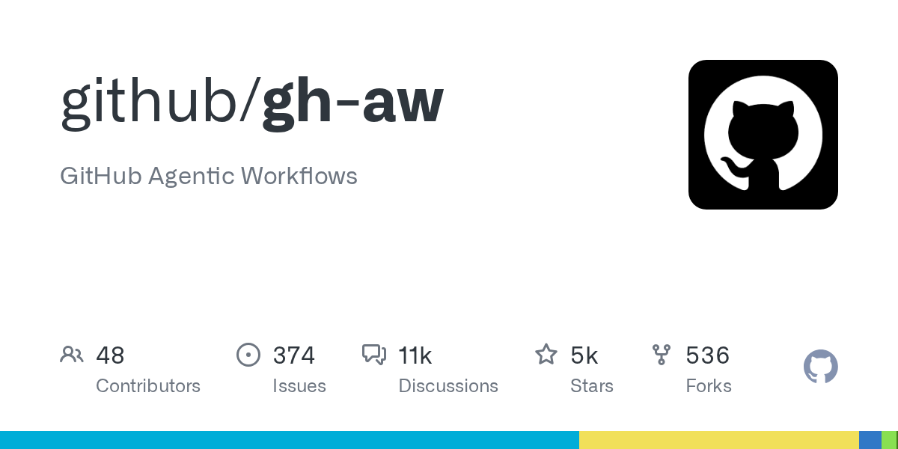
GitHub 저장소 자동화를 위해 매번 복잡한 워크플로우 설정을 작성해야 하는 문제를 마크다운 기반 인터페이스로 해결한다. GitHub Next의 Agentic Workflows는 YAML 머리말이 포함된 마크다운으로 자동화 지시를 작성하면 gh-aw 명령이 이를 GitHub Actions 워크플로우로 컴파일하고, AI 에이전트가 이슈 분류, PR 리뷰, CI 조사 등을 저장소 내에서 수행하도록 한다. 기본 읽기 전용 권한과 샌드박스 격리로 보안을 강화했으며, Copilot, Claude, Codex, Gemini 등 다양한 에이전트를 플러그인 방식으로 사용 가능하다.
핵심 포인트: 핵심 기여: gh extension install github/gh-aw 한 줄 설치로 마크다운 기반 에이전트 워크플로우 정의 가능하며, safe-outputs 규격을 통한 권한 제어와 샌드박스 격리로 저장소 상주 에이전트의 안전성을 보장한다.
기타 (Others)
Tangle — 소형 모델의 자기개선 학습으로 대형 모델 성능 초과
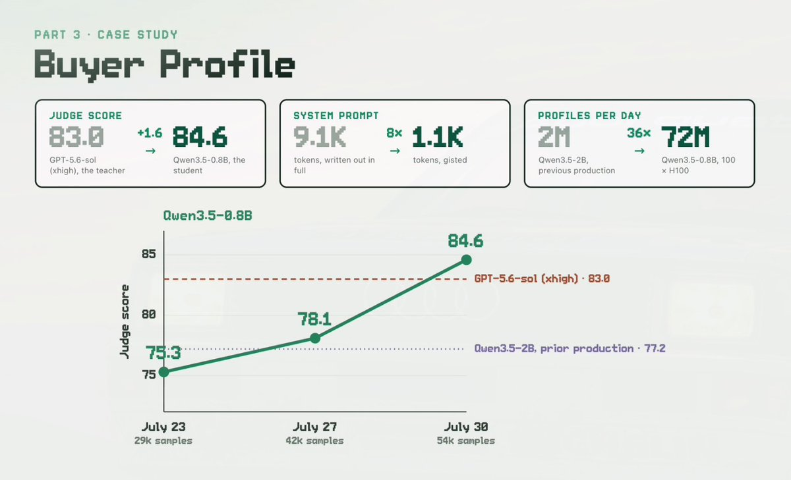
범용 대형 모델을 모든 업무에 활용할 때 발생하는 비용 문제와 성능 편차를 해결하는 방식. Shopify는 0.8B 소형 모델을 실제 업무 결과 평가와 실패 데이터 재학습으로 미세 조정하여 특정 작업에서 대형 모델을 초과 성능하도록 개선했다. 이 학습 파이프라인을 구축하는 오픈소스 기반 기술 Tangle을 공개하여, 반복 업무마다 작고 저렴한 전용 모델 개발 방식의 확산을 가능하게 한다.
핵심 포인트: 핵심 성과: 0.8B 소형 모델이 특정 작업에서 GPT-5.6 Sol을 초과 성능 달성. Shopify의 자기개선 학습 구조는 작은 모델도 업무 특화 최적화를 통해 대형 모델보다 우수한 성능 실현 가능함을 입증.
🔗 threads.com/@choi.openai/post/Dc1TJW2AAY9…
기타 (Others)
Goal-Driven — AI 에이전트 작업 완료 기준을 자동 검사하는 다중 에이전트 프롬프트
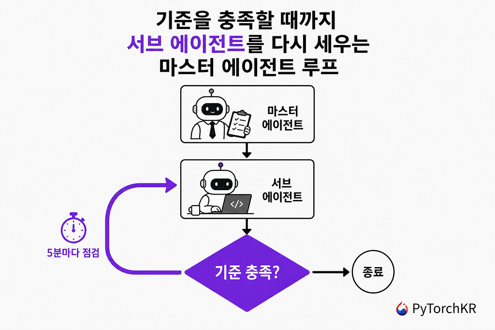
AI 코딩 에이전트가 작업을 절반만 완료하고 멈추는 문제는 에이전트 자신이 종료 판정 기준을 갖지 못하기 때문이다. Goal-Driven은 종료 판정 권한을 별도의 마스터 에이전트에게 넘기고, 사용자가 정한 목표와 완료 기준을 기반으로 서브 에이전트를 반복 실행하는 방식을 제시한다. 이를 통해 다중 에이전트 시스템이 하나의 문제에 300시간 이상 연속으로 매달릴 수 있으며, 저장소는 실행 가능한 프로그램이 아닌 프롬프트 템플릿으로 제공된다.
핵심 포인트: 핵심 기여: 마스터 에이전트 기반 감독자 구조로 에이전트의 조기 종료 문제를 해결하고, 목표와 완료 기준 정의만으로 다양한 LLM 플랫폼에 즉시 적용 가능한 프롬프트 템플릿 제공.
🔗 discuss.pytorch.kr/t/goal-driven/11783
기타 (Others)
Abogen — 전자책·PDF를 음성·자막으로 변환하는 무료 도구
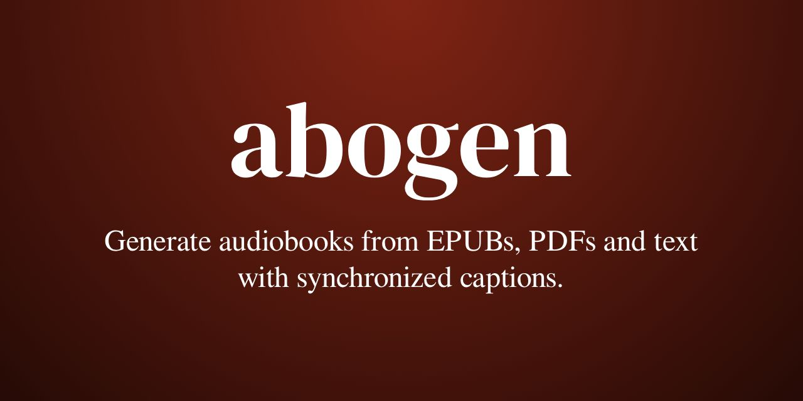
전자책이나 PDF 파일을 텍스트로 변환하는 과정에서 음성 생성과 자막 동기화를 동시에 진행하기 어려운 문제를 해결하는 도구. Abogen은 ePub, PDF, 마크다운 등 다양한 형식의 입력을 받아 Kokoro-82M 음성 모델로 고품질 오디오를 생성하고 문장 또는 단어 단위로 정렬된 자막을 함께 제공한다. 3,000자 기준 11초 내 처리로 3분 28초 분량의 음성을 생성하며, WAV, MP3, FLAC, M4B 등 다양한 출력 형식을 지원한다.
핵심 포인트: 핵심 성과: 노트북 그래픽카드 단일 장비에서 3,000자를 11초 만에 처리하여 음성·자막 동시 생성. MIT 라이선스 오픈소스로 5,700개 이상의 깃허브 스타 획득.
🔗 github.com/denizsafak/abogen
GitHub
Claude Sonnet 5 — 한글 도구 파라미터 유니코드 이스케이프 손상 버그 해결
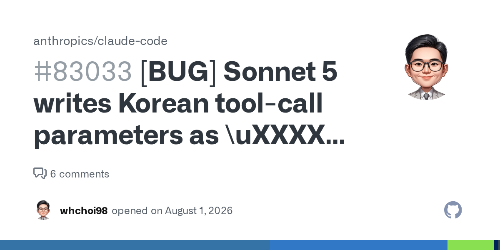
Claude Sonnet 5에서 AskUserQuestion, TodoWrite 등의 도구 호출 시 한글 문자열이 유니코드 이스케이프 시퀀스로 잘못 변환되면서 한글이 완전히 손상되는 문제가 발생했다. 원인은 모델이 한글을 UTF-8 리터럴 대신 \uXXXX 형식으로 인코딩하면서 16진수 코드포인트를 오류로 작성하는 것이다. 해결법은 CLAUDE.md에 한글 및 비ASCII 문자를 항상 리터럴 UTF-8로 작성하도록 명시적으로 지시하는 것이다.
핵심 포인트: 핵심 성과: 도구 파라미터에서 100% 한글 손상이 발생하는 근본 원인을 규명하고, CLAUDE.md 설정으로 간단하게 해결 가능함을 입증. GitHub Issue #80009, #78996 등 다수 보고 건의 원인을 파악하고 실행 가능한 해결책 제시.
🔗 github.com/anthropics/claude-code/issues…
GitHub
Claude API — 프롬프트 레거시 코드 제거로 정확도 5.3포인트 향상
LLM 모델이 진화하면서 이전 세대용으로 작성된 프롬프트의 레거시 지시문들이 불필요한 토큰 낭비와 성능 저하를 야기하는 문제를 해결하기 위해 앤트로픽이 개발한 오픈소스 도구. claude-api prompt-audit 명령어로 검증 의식, 강조 부스터, 스캐폴드, 구식 예시, 모순 규칙, 레거시 설정값 등 6가지 안티패턴을 감지하고 제거 제안을 제공하며, 내부 고객지원 벤치에서 정확도 5.3포인트 향상과 티켓당 비용 감소를 달성했다.
핵심 포인트: 핵심 성과: 내부 고객지원 벤치에서 정확도 5.3포인트 향상과 동시에 티켓당 비용 절감, 6가지 프롬프트 안티패턴 자동 감지 및 제안 생성으로 모델 성능 최적화 실현.
🔗 github.com/anthropics/skills/tree/main/sk…
기타 (Others)
ENGINEERING
AI Gateway — LLM API 비용 78% 절감한 인프랩의 라우팅 통합기
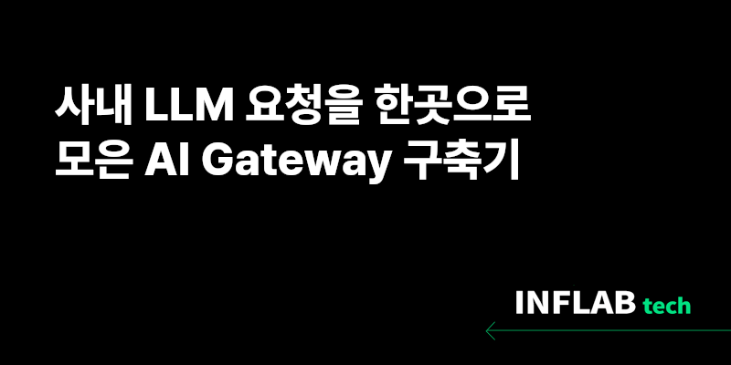
LLM 서비스 운영 시 모델 변경 주기 단축, 비용 증가, 키와 사용량 분산으로 인한 관리 어려움이 발생한다. 인프랩은 이를 해결하기 위해 AI Gateway를 구축했으며, 코드에 모델명을 직접 명시하지 않고 Low, Medium, High 등급으로 추상화하여 라우팅을 일원화했다. 이를 통해 AWS 비용의 23%에 달하던 LLM API 비용을 78% 감축하고, 신규 모델 검증과 키 관리를 중앙화하여 운영 효율성을 대폭 개선했다.
핵심 포인트: 핵심 성과: LLM API 비용 78% 절감, 모델 라우팅 추상화로 개별 서비스별 모델 관리 제거, 사내 30개 이상 LLM 사용처의 통합 관리 실현
🔗 tech.inflab.com/20260825-ai-gateway/
기타 (Others)
ArchUnit — 아키텍처 규칙을 테스트 코드로 강제하기
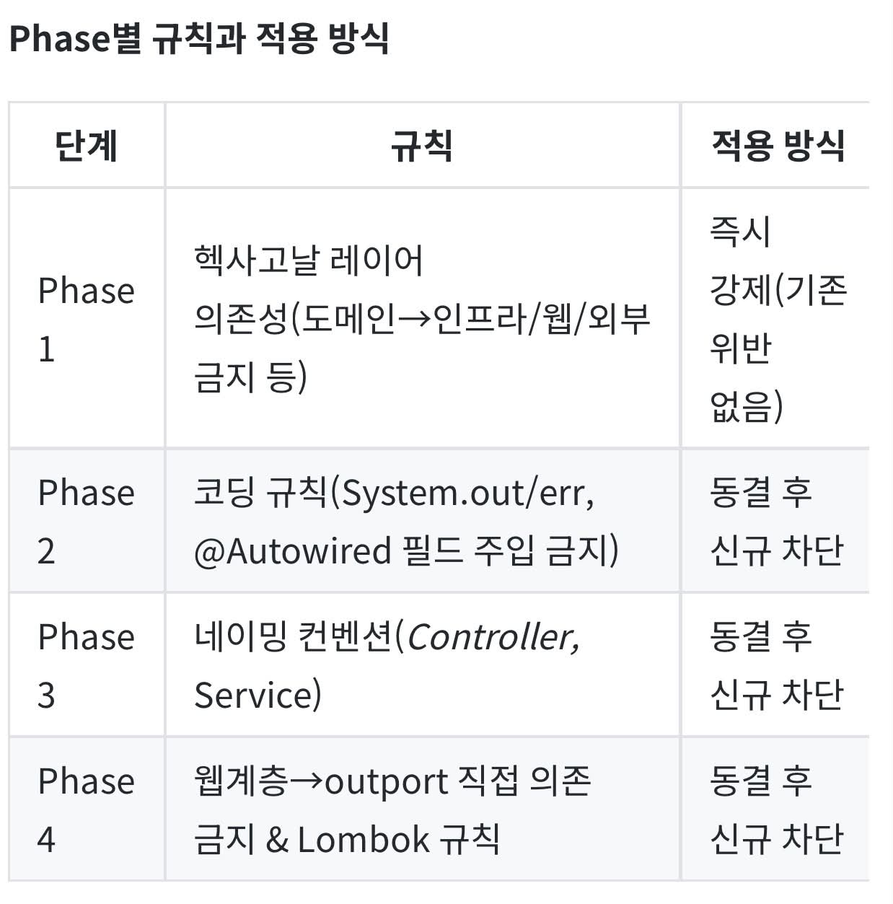
문서로만 정의된 아키텍처 규칙은 코드 리뷰나 바쁜 일정 속에서 결국 위반되기 마련이다. 우아한형제들은 ArchUnit을 활용해 레이어 의존성 규칙을 테스트 코드로 강제하는 방식을 도입했다. 빌드 단계에서 아키텍처 규칙 위반을 자동으로 검증함으로써 사람의 눈이나 AI 에이전트에만 의존하는 것보다 더 실효성 있는 규칙 준수 메커니즘을 구현했다.
핵심 포인트: 핵심 기여: 헥사고날 아키텍처 기반 레이어 의존성 규칙을 ArchUnit 테스트로 자동화하여 CI/CD 빌드 단계에서 아키텍처 위반을 사전에 차단하고, 문서와 코드 리뷰에만 의존하던 방식을 완전 자동화된 검증 체계로 전환.
🔗 techblog.woowahan.com/26835/
블로그 (Blog)
PRODUCT & INDUSTRY
Claude Code — AI가 자동으로 작성하는 버그 리포트
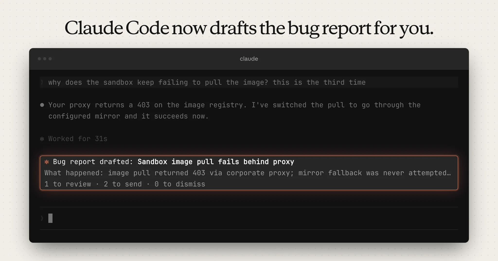
사용자가 버그를 보고하지 않는 이유는 게으름이 아니라 문제 상황을 재구성하는 번거로움 때문이다. Claude Code는 실패가 발생한 현장에서 명령어, 출력 결과, 예상 결과를 자동으로 정리하여 구조화된 버그 리포트를 작성한다. 사용자는 초안을 검토하고 수정한 후 승인 버튼을 누르기만 하면 되므로 피드백 제출 장벽이 크게 낮아진다. 이는 Anthropic이 재현 가능한 형태의 실패 데이터를 체계적으로 수집할 수 있는 피드백 파이프라인으로도 기능한다.
핵심 포인트: 핵심 성과: 발표 24시간 이내 조회 25만 건을 돌파했으며, 기계는 초안 작성을 완료하되 발송은 사람이 승인하는 에이전트 설계의 표준 패턴을 제시했다. 또한 흩어진 사용자 불만을 구조화된 보고서로 수집하는 데이터 파이프라인을 확보함으로써 제품 개선 속도에서 경쟁 우위를 확보했다.
🔗 x.com/ClaudeDevs/status/20926950382707756…
기타 (Others)
DESIGN.md — 2천 개 명작 제품의 디자인 규칙을 AI가 읽는 마크다운으로
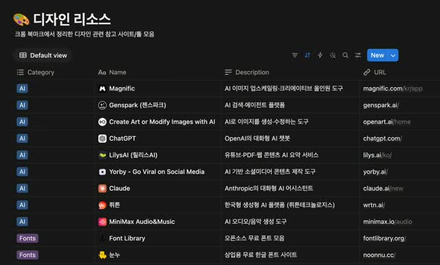
AI 에이전트가 생성하는 UI가 훈련 데이터의 평균값으로 수렴되어 촌스러운 디자인이 되는 문제를 해결하기 위해, 세계 명작 제품 2천 개의 디자인 언어를 DESIGN.md 파일로 정리했다. 색상, 타이포그래피, 여백, 컴포넌트 스타일링, 사용 규칙 등 설계 규칙 전부를 담은 마크다운 파일 하나를 프로젝트에 추가하면, Claude Code, Cursor, Codex, v0 등 AI 에이전트가 해당 제품의 디자인 언어를 자동으로 적용하여 UI를 구성한다.
핵심 포인트: 핵심 성과: 소개 트윗 28만 조회, 일본어 소개 26만 조회, 북마크 9천 개 이상 기록. 디자인 자산의 추상화 단위가 이미지에서 코드로, 코드에서 규칙으로 한 단계 진전되어 에이전트의 규칙 적용 자동화를 실현했다.
🔗 threads.com/@unclejobs.ai/post/Dc2RqgwDLD…
기타 (Others)